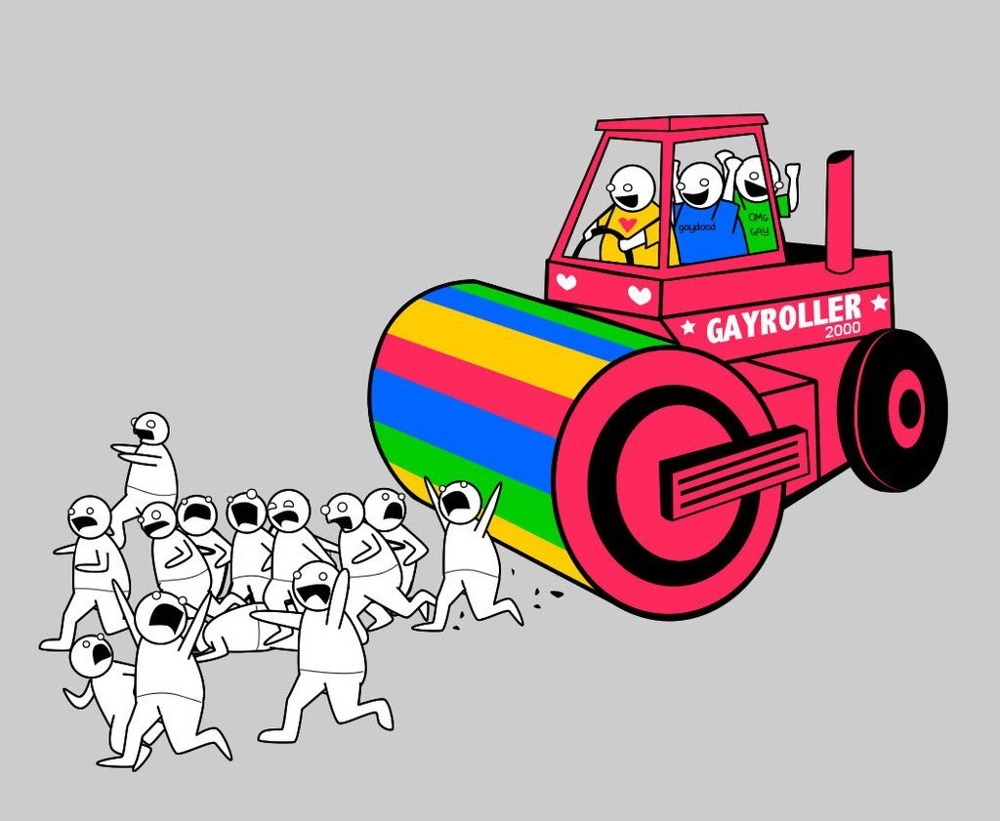

Trad rightist family fetishism and upscale trendy (mostly-)leftist helicopter parenting are two sides of the same base-metal coin. A parent’s obligation to his child is pretty much infinite, and one of the most important parts of that obligation entails not demanding that his child’s existence validate his own choices / ego / ideology. If you are fundamentally dependent on that relationship for your own needs, you will pervert it to suit yourself.
If you think that the highest purpose of your existence is raising a family…you would be well-advised to find a better highest purpose before you actually go raising a family. I know what it is like to be raised by parents whose most fundamental selves and aspirations are tied up in being parents. I do not recommend the experience.
i’ll immediately grant that immigration is a complex subject that requires a thorough policy solution, but “continuing to empower and remove from scrutiny a nativist brute squad targeting immigrant laborers driven to the US due to American foreign policy interventions in Latin America” is easily one of the worst solutions we could live with
I actually don’t know that if grant that immigration is a complex issue in a nontrivial sense. nobody thinks “should people be allowed to move from pennsylvania to rhode island?” is complex because actually placing a restriction there would be dumb and immoral, end of story. same thing for rhode island and kenya
Eh. At least part of what makes the PA/RI transition obviously trivial from a policy standpoint is that ultimately the same entity has sovereign authority on both ends. Telling the government “you have unlimited responsibility for people and no corresponding authority over their circumstances” is at least conceivably dicey.
Now, I’m in favor of eliminating the immigration restrictions between RI and Kenya by having us annex Kenya, but…this is, also, complex.
I get fairly annoyed when I see criticism of Rent that’s just ‘they’re lazy and should just pay their rent’ because it completely overlooks the fact that the reason they hadn’t paid was because Roger was 1) sick 2) dealing with withdrawal while trying to get clean 3) traumatized from finding his girlfriend’s dead body and 4) cripplingly depressed, and all these factors meant he literally could not bring himself to leave the apartment, and even if Mark had a better paying job he probably wouldn’t be able to cover it all, so Benny, their good friend who owned the building was like ‘Oh jeez, this is a shitty situation so I won’t charge you anything because I care about you guys’
Now, obviously before the start of the show the three of them grew apart, and listen…I like Benny. I really do. I don’t think he’s as much of an asshole as people say he is. But it was incredibly shitty to give them no forewarning, just turned their power off in late December and said ‘if you can’t pay up a years worth of rent in a week then I’ll evict you’. They had a verbal contract, which does in fact count. And the only reason he was threatening them was because he was mad at a different friend who wasn’t even involved with their living situation. He then spends the rest of the show wondering why everyone thinks he’s a dick, because it’s supposed to show you that he’s oblivious now. It’s a comment on people who Make It™ but then forget what it was like before when they were struggling and suffering.
But anyway the main point of this little rant was. Just. Criticisms for this show exist, obviously, but can you all not focus on the one that screams ‘Roger’s mental illness is fucking irrelevant, he’s just lazy’ because uh! that’s a shitty opinion my dudes!
I’ve gotten some messages like ‘well Mark still should have gotten a job sooner!’ And uh! Let’s chat!
Mark had a job for the entire time before the show starts out- the whole year where they weren’t paying rent- it’s referenced in literally the opening line ‘From here on in I shoot without a script- see if anything comes of it….instead of my old shit’. Later in the song rent he burns old screenplays that he had filmed and Roger reads the reviews of them. Later in la vie boheme b he sings about how much being a filmmaker sucks.
Point was, Mark had a job, but literally? Y'all ever tried to live in New York? There’s no way in hell he was gonna be able to cover the rent for two people while also getting food and also buying the azt for Roger. Hello?? Roger literally couldn’t leave the house how do you think he was getting his medications? Mark clearly sees himself as Roger’s caretaker.
Likely what happened was in between constantly worrying about Roger and working on a bunch of shitty meaningless films, Mark started feeling a little stifled emotionally and creatively, which is, you know, bad for an artist. Add Maureen cheating on him and dumping him to that mix and he probably wasn’t in the best headspace. So he probably thought to himself, ‘Wow, since Benny is being extremely cool about our rent because he cares about us, maybe I can get away with not working on bullshit for a few months and make a documentary that speaks to me! Also, Roger’s not been getting any better, and now that Maureen moved out he’s got even less company, so working by myself with flexible hours would make it easier for me to keep an eye on him! This is a great plan!’ And then like IMMEDIATELY Benny pulls his bullshit with 'cancel a protest you aren’t involved in or pay me a years worth of rent in one week’.
Mark tagged along to the Life Support meetings because of how fucking stressed out he is- I know the movie had him filming for some reason but that’s not what happens in the stage direction. He gets convinced to go because Angel says it’s 'for people coping with life’ and Mark’s like well uh! I sure could use some fucking free therapy right now!
Mark shows signs of depression all throughout the show, but it’s never focused on as much as Roger’s depression, or Mimi’s addiction or Angel’s sickness, because the show. Is supposed to be the documentary he’s working on. Mark does not view himself as a character in this story. Other than some commentary here and there which you’d expect from a documentary filmmaker- he never turns the camera on himself. We see him going to therapy meetings and not talking. It’s not until Halloween and Goodbye Love that he snaps and starts talking about how he feels. This is after he’s already accepted another job that he feels stifled by, and in 'What You Own’ when he quits, it’s a very freeing moment because it’s the first time we see him go 'this is what I need to do to get better’. It’s literally the first time we ever see him putting himself and his needs first and not focusing on what another person needs from him.
Tldr: stop calling Roger and Mark lazy for not paying rent, it wasn’t realistic for them to pull off due to poverty and mental illness, also verbal contracts hold up in court and squatters have rights, thank you, goodnight
The “they’re lazy” critique confuses me greatly because… from what I could tell the whole point was to critique the system that got them stuck, while acknowledging that they were flawed too.
Like… did we watch the same show?
Also like – even if they were just lazy, even if they were just blowing off responsibilites to sit at home and fuck around, a huge theme of the show is trying to thrive when everyone around you is dying. I do not judge anyone living in such a festering epicenter as early-’90s New York, seeing so much illness and death and wondering when it’ll come for you too, for saying “fuck it” and deciding to live on your own terms while you can.
So, to be clear: Rent is a good show that is very much a product of its time, produces cultural reactions now that were very much not the ones that its author could have anticipated, and preening righteousness-in-hindsight takes are as dumb as they always are.
That being said –
Even completely tabling anything that comes before it, there’s a moment in Rent that is unavoidably going to cement Roger and Mark as insufferable spoiled lazy fucks in the eyes of a modern audience. This is the moment where Benny offers them lucrative creative-class jobs that will solve all their concrete financial problems (and maybe the financial problems of some of the people around them too), and they turn it down, because…something something artistic integrity yuppies are scum.
Roger maybe has an excuse, if not a justification, due to all his issues. Mark definitely doesn’t.
There has definitely been a lot of lost ground, since the 90s, in terms of “what do we think it’s fair to expect from the world?” I am not a fan of throwing around words like “entitled.” I think it would be better if we could all expect a lot more than we do, right now. But I understand what is causing people to say “Mark was offered everything I am struggling to get and he threw it away because it wasn’t presented in a manner that flattered his bohemian ego enough, he can get fucked.”
Balioc have you ever played Umineko No Naku Koro Ni because I am pretty sure that the Golden Witch Beatrice from that game is actually straight up just an avatar of your Hastur
I have not. But perhaps I will check it out at some point.
Publicly posting for the benefit of others who might find this interesting.
Here’s a species of rhetoric I find confusing, and which I associate with social conservatives although it isn’t exclusive to them: complaining on the grounds of your right to have an opinion, in a way that seems out of order with the opinion itself.
Suppose a practice I really really disapprove of, say marital rape for example, came to be both legally endorsed and that questioning of it, in educated circles, came to be regarded as socially unacceptable if not subject to formal censure. That would be bad! But it would be bad more or less because it facilitated a practice that was evil. The victims of such a policy wouldn’t really be feminists qua persons who disapprove of marital rape, but married women and (for practical purposes not as typically, but no less truthfully when they were) men either subject directly to such violence or modifying their behavior in the threat of it.
Sometimes I see opponents of (e.g.) gay rights directly stating their case. But more often I see them complaining that they are censured qua gay rights opponent, and that there should be more diversity of opinion in the public sphere, or that private beliefs shouldn’t be subject to public censure, arguments that take the belief as a sort of free-floating ascriptive status which we must not use as a basis of discrimination (you can of course point out apparent hypocrisy in either direction but I find those kinds of accusations uninteresting, so.)
This could be a run around the censors, by focusing on the censorship itself, such that everyone knows what you mean - where an Englishman says “we should repeal the law against advocating a republic” and everybody can probably guess that he means that we should have republic. (Are those laws actually enforced? Do they even exist? Whatever, it’s just an example so facticity conveniently doesn’t matter.) But the thing about censorship-by-social approval (aside from being an organic feature of legally free speech itself) is that if your audience knows what you mean, so do the soi-disant censors, by definition.
(For the record I find this kind of thing as noisome when I agree with the object-level claim as when I oppose it: complaining about how one can’t criticize Israel, for instance. Just directly say what you mean rather than grandstanding about how brave you are!)
Short version: often this is an identity thing, specifically a defense against a perceived assault on group identity fixtures.
In many cases, someone who cares about being (e.g.) a “traditionalist Christian” doesn’t actually care about changing policy vis-a-vis gay peoplenearly as much as he cares about his ability to say that he doesn’t approve of homosexuality without suffering massive blowback, his ability to teach his kids his preferred anti-gay ideals and to pass on this cultural marker, his ability to Stand Tall as a Traditionalist Christian and live a life of public dignity, etc. To him, while the actual policy change itself is noisome, the change in discursive standards is vastly worse. In one case it affects mostly a bunch of people with whom he doesn’t interact; in the other it affects him and the people closest to him, constantly.
I have to say: I am really amused by the extent to which so many people of all political persuasions can unselfconsciously say “we’re so self-destructively fractious and the other side never breaks ranks at all!”
This is not a new insight. But seriously, dudes, go do even a tiny bit of research, your enemies are just as screwed-up and internally-divided as you are.
Some guy: writes ridiculous racist novel with bizzaro world fantasy land racial assumptions:
Trump alt-right types: stan it endlessly because it’s “prophetic” (it really, really isn’t, except maybe as a ludicrous exaggeration)
Fascist-mockers: make fun of the racist author for looking like a perfectly normal older white man
Stuff like this is destructive.
WRT immigration: we’ve been trying to get people to recognize that something is wrong, that they can be hurt, that just because you are a meek and mild neoliberal doesn’t mean that everybody else is.
It’s like trying to teach somebody who grew up in a land where cars are rare and drivers are insanely careful that there is a very real hazard.
And then, this guy teaches them this kind of ludicrous, lurid tall tale where VW Bugs become Panzers and Americans with their big dually pickups and presumption turn into homicidal maniacs driving monster trucks.
Also, the Gayroller from The Oatmeal is supposedly not just real, but common.

And the everyday anarchy that exist on the streets of third world countries is presented not as commonplace chaos, but as The Purge.
To a thinking person, this is all clearly lurid BS that brands the author either as an unhinged racist or a writer of exploitation media. And yet, someone may easily be distracted from the fact that cars are a lot more common outside your Ruritania, that drivers from other lands presume upon their right of way, and that not everyone is cautious.
WRT immigration: we’ve been trying to get people to recognize that
something is wrong, that they can be hurt, that just because you are a
meek and mild neoliberal doesn’t mean that everybody else is.
I confess that I’m having trouble parsing the non-metaphorical version of the point here. Care to elucidate?
I have to be honest, at this point my stereotype of rationalists is people going,
“Man, modern atomized individualism is one of the most important social achievements of modern times, and the more we accelerate it, the better. On a completely unrelated note I sure am enjoying living in this group home with twelve other close friends who help me do chores and mitigate my mental illness.”
better than “man, i’m now destitute after my only support network threw me out because i’m queer”
the best feature of atomized individualism is the possibility to get a support network of twelve friends who are actually similar enough to you
you can’t get subculture society without atomized individualism
Yeah, the point I keep coming back to, and the reason I think the above referenced opinion isn’t self-contradictory, is that modern atomized individualism lets you choose your tribe/pack/family. They weren’t born into that group home, they weren’t assigned to it by state or clergy, they chose it because they felt the people, individually and collectively, fit well with them.
There are surely problems with that model: people sometimes make choices that are very bad for them, and it can sometimes requires painful choices from those who really would be fine where they started. Nevertheless, I think a lot of people ignore the extent to which modern individualism well-realized is not so much about dropping out of society as choosing your own, and the extent to which many communities (including, ironically, many communities formed around conservative and the more anti-modern flavors of liberal/anarchist principles) couldn’t exist without it.
I think what many critiques of atomized individualism are really grasping toward (as you allude to in your tags) is that more and more people are ending up with small or nonexistent support networks and sources of meaning in our current atomized environment, and it’s really difficult to build those up from scratch if you end up in such a situation. There’s nothing inherent to atomized individualism that would cause this, but our current society seems to push more people in that direction. See, for example, the data about how high schoolers today have fewer friends and socialize less with the friends they do have than high schoolers 10 years ago.
I’m not so much trying to gesture at it as to yell it at the top of my lungs.
The rationalist thing is to go “Atomization is great, because rather than being forced into coercive, restrictive social structures, we form our own by choice!”
Which is very pretty and an admirable goal but as evidence based rationalists it seems to me that the question of whether that’s actually what’s happening ought to matter to you.
If this is what was happening then… Well, like I was saying the book wouldn’t be called “Bowling Alone.”
If that was what was happening you’d expect the slow disintegration of churches, lodges and political organizations to be accompanied by rising participation in such indisputably non-coercive activities as hobby groups, sports leagues, and informal get-togethers to eat or play games, as those things would continue to be important for their own sake and begin to act as voluntary informal support networks.
But subjectively I don’t see that and according to Putnam that hasn’t happened. Instead all kinds of socializing have just gone “bleeeeagh” at the same time.
The last 75 years have seen a severe erosion of the specific kinds of social structures that everyone in this thread claims to value and I feel like that should matter more.
Bowling Alone, noteworthily, is a book whose last chapter basically says “…and there’s this Internet thing that seems to be on the horizon, maybe it’ll be relevant to people’s social patterns, we couldn’t say right now.” One way or another, there’s a lot that its analysis doesn’t capture.
Anyone saying “I am in a group house in Berkeley with twelve of my best friends who are supporting me in living my best life” is saying that atomization worked, that the new norms helped him to find a comfortable social milieu rather than robbing him of one. I would be inclined to say much the same thing, for myself, even though I live on the other side of the country and I have less than no desire to live in a group house.
It’s possible that this is flukey or rare, or that making it happen requires someone to have skills that aren’t widely cultivated. It’s also possible that this is a competing-interests thing, where (e.g.) certain kinds of misfits who would have suffered greatly in the old thickly-obligatory tribes and communities are making out like bandits even as many normal people are feeling the rug pulled out from under them. These are things worth hashing out. But if someone’s point is “I love atomization and freedom from community obligations, check out how it gave me this awesome social circle that wouldn’t otherwise have formed” – well, at least with regards to his own experience, you should probably listen.
This is rationalists we’re talking about, though. These are the folks who say their goal is to optimize the world. That makes it their self-imposed duty to ask not if atomization has worked for them, but if atomization has, on the whole, been good for everyone affected by it, and if not, ask what is to be done for those who are worse off because of it
This, and:
You’re making the assumption, again, that there are two different kinds of social connections whose strength is inverse:
“I’m well off, because the weakening of the thick, coercive social structures has strengthened the informal, choice based social structures that help me.”
Admittedly, Bowling Alone was written 20 years ago but personally I have strong doubts whether the trend has reversed, and in any case it demonstrates that there is no necessary inverse relationship between these two kinds of structures.
It is entirely possible that as it has become easier to flee an abusive church or family and more difficult to form voluntary, makeshift communities to replace them.
It is possible that “certain kinds of misfits who would have suffered greatly in old thick-obligatory tribes” are not “making out like bandits” but find themselves struggling not to feel like living ghosts in a world that doesn’t care.
A real underlying frustration thing I have is the tendency of people in rationalist or adjacent spaces to intensely drag things back towards the “competing needs” framework in a way that doesn’t feel evidence based to me.
I think I’ve said this before but when I watch old 50s sitcoms the thing that seems nostalgic isn’t that women and children knew their place, it’s that mom and dad are always having friends over to play cards. It looks fun, to have game nights that don’t have to be scheduled six weeks out only for 3 of the 4 people you invited to call an hour before and explain that they aren’t coming.
Bowling Alone was gratifying to me because it validated my underlying sense of, “Putting this stuff together feels really hard”.
I haven’t finished college because I was hit with a severe bout of depression of the “I can’t even get out of bed except to use the bathroom” variety and I just went home because all those great voluntary bonds I formed in college weren’t strong enough to support me through that or provide much other than “Gosh I sure hope things get better.”
Honestly, I’m only now starting to come to grips with how angry I am about that, but, like, do I come off as trad to you?
I don’t want to deny your experiences here, and I know that there are plenty of people writing on Tumblr who have had experiences similar to yours.
I can say: my experience was not like that. My experience was that I became part of a coagulating let’s-be-geeky-weirdos-together social scene in college, and almost fifteen years later my personal life – despite additions, subtractions, driftings-apart, fights, and one epic community-destroying disaster schism – is basically tied up in a descendant-group of that same social scene. I’m still hanging out numerous times every week with some of the very people I was hanging out with as a sophomore. This despite the fact that we’re upper-middle-class types dealing with metropolis rents, academic job placement, and similar issues. My experience is that occasionally we bump into, and even exchange membership with, comparable groups. My experience is that people are eager to play games together, to put in the effort to get cool holiday presents for each other, etc., and that most often such things happen as planned, even though often life stresses make it annoyingly difficult in some way. And my experience is that all this works specifically because we have social filters for compatibility, and when you play D&D every other week it’s with people whom you genuinely like, rather than with whatever randos got glued to you by social circumstance.
And the dude who says “my group house is awesome” is presumably saying something very similar. He’s not wrong, he’s not lying, he’s…working from a very different experience than yours.
I don’t know whose story is more representative. I don’t know whether this really comes down to “I got lucky and turned out to have natural immunity to the spreading plague.” I don’t know exactly how you replicate the social technologies that make things work well on this front (although I do have some thoughts).
But the people saying the things to which you object aren’t unaware of their own situations. If your argument is that things haven’t worked out so well for everyone, that’s an important point and one that has to be considered. If your argument is that they’re lying or mistaken about how well things have worked out for them, they are correctly going to tag you as a saboteur. If you’re saying that there are no “competing needs” here because gosh-darn-it they just don’t understand their own needs, well…
I have to be honest, at this point my stereotype of rationalists is people going,
“Man, modern atomized individualism is one of the most important social achievements of modern times, and the more we accelerate it, the better. On a completely unrelated note I sure am enjoying living in this group home with twelve other close friends who help me do chores and mitigate my mental illness.”
better than “man, i’m now destitute after my only support network threw me out because i’m queer”
the best feature of atomized individualism is the possibility to get a support network of twelve friends who are actually similar enough to you
you can’t get subculture society without atomized individualism
Yeah, the point I keep coming back to, and the reason I think the above referenced opinion isn’t self-contradictory, is that modern atomized individualism lets you choose your tribe/pack/family. They weren’t born into that group home, they weren’t assigned to it by state or clergy, they chose it because they felt the people, individually and collectively, fit well with them.
There are surely problems with that model: people sometimes make choices that are very bad for them, and it can sometimes requires painful choices from those who really would be fine where they started. Nevertheless, I think a lot of people ignore the extent to which modern individualism well-realized is not so much about dropping out of society as choosing your own, and the extent to which many communities (including, ironically, many communities formed around conservative and the more anti-modern flavors of liberal/anarchist principles) couldn’t exist without it.
I think what many critiques of atomized individualism are really grasping toward (as you allude to in your tags) is that more and more people are ending up with small or nonexistent support networks and sources of meaning in our current atomized environment, and it’s really difficult to build those up from scratch if you end up in such a situation. There’s nothing inherent to atomized individualism that would cause this, but our current society seems to push more people in that direction. See, for example, the data about how high schoolers today have fewer friends and socialize less with the friends they do have than high schoolers 10 years ago.
I’m not so much trying to gesture at it as to yell it at the top of my lungs.
The rationalist thing is to go “Atomization is great, because rather than being forced into coercive, restrictive social structures, we form our own by choice!”
Which is very pretty and an admirable goal but as evidence based rationalists it seems to me that the question of whether that’s actually what’s happening ought to matter to you.
If this is what was happening then… Well, like I was saying the book wouldn’t be called “Bowling Alone.”
If that was what was happening you’d expect the slow disintegration of churches, lodges and political organizations to be accompanied by rising participation in such indisputably non-coercive activities as hobby groups, sports leagues, and informal get-togethers to eat or play games, as those things would continue to be important for their own sake and begin to act as voluntary informal support networks.
But subjectively I don’t see that and according to Putnam that hasn’t happened. Instead all kinds of socializing have just gone “bleeeeagh” at the same time.
The last 75 years have seen a severe erosion of the specific kinds of social structures that everyone in this thread claims to value and I feel like that should matter more.
Bowling Alone, noteworthily, is a book whose last chapter basically says “…and there’s this Internet thing that seems to be on the horizon, maybe it’ll be relevant to people’s social patterns, we couldn’t say right now.” One way or another, there’s a lot that its analysis doesn’t capture.
Anyone saying “I am in a group house in Berkeley with twelve of my best friends who are supporting me in living my best life” is saying that atomization worked, that the new norms helped him to find a comfortable social milieu rather than robbing him of one. I would be inclined to say much the same thing, for myself, even though I live on the other side of the country and I have less than no desire to live in a group house.
It’s possible that this is flukey or rare, or that making it happen requires someone to have skills that aren’t widely cultivated. It’s also possible that this is a competing-interests thing, where (e.g.) certain kinds of misfits who would have suffered greatly in the old thickly-obligatory tribes and communities are making out like bandits even as many normal people are feeling the rug pulled out from under them. These are things worth hashing out. But if someone’s point is “I love atomization and freedom from community obligations, check out how it gave me this awesome social circle that wouldn’t otherwise have formed” – well, at least with regards to his own experience, you should probably listen.
One of the major unappreciated benefits of being ruled by a God-Emperor rather than a democratic government:
Most people, being explicitly as well as actually unable to influence political outcomes, are free to stop caring about them rather than being driven insane.
I mean we’re all firmly in the inexorable grasp of physics and biology but that doesn’t stop us grousing about it.
…it actually does, to a large extent. My social circle is above the 99th percentile for “bitching about the inconvenience caused by a lack of teleportation access,” I’m pretty sure, and – look, man, if the amount of bitching about [pointless political thing of the day, let’s say Covington] in contemporary culture were limited to the amount that my friends bitch about being unable to teleport, that would be enough to take us several steps closer to paradise.
I don’t imagine that grousing about those idiots in the government will ever cease to be a popular pastime. But we are way beyond that, we are in the territory of often thinking – and certainly feeling – and even purporting – that this is a good use of our time and a good thing to do with our minds.
One of the major unappreciated benefits of being ruled by a God-Emperor rather than a democratic government:
Most people, being explicitly as well as actually unable to influence political outcomes, are free to stop caring about them rather than being driven insane.
Maybe the people in my bubble are just weirder and more radical
cryptolibertarian catgirls who believe in over-the-counter estradiol,
transhumanist body modification, and medically unnecessary brain
transplants based on informed consent.
You’ve mentioned this kind of thing a couple of times now, so I’ll derail to the object level to ask:
What is the problem with these particular beliefs / preferences? What makes them “cryptolibertarian” other than a general rootedness in individual freedom? For that matter, what puts them in tension with other individual-freedom-centric beliefs like “boys and girls can have traditional gender preferences if they like, as most of them probably will by default, or for that matter they can be gender-nonconforming if they like without it being a reflection of some essential gender identity thing, and adult ideologues of all stripes should stop putting pressure on them?”
I am in fact genuinely confused about what kind of reaction is going on here.
I have a relatively high opinion of Corneliu Zelea Codreanu as a leader, but I’m pretty firmly against him being considered a saint.
Among other things, saints shouldn’t attempt assassinations.
If you believe that sainthood is a meaningful thing at all (other than, like, “a useful lie and opiate for the masses”)…this kind of reasoning doesn’t get you anywhere. Either he is a saint or he isn’t, either way it’s a fact, and the determination is not up to anyone other than God. If you want to check, the tests that make sense are things like “see whether miracles can be performed through his relics,” and not anything that looks remotely like ideological argument about his character.
…there are some broader discussions about the nature of religiosity that could easily use this as a jumping-off point, but it is very late.
resources being abundant doesn’t make people fight less
Um, yes it does? Wars are fought over resources.
wars are also fuelled by resources, and population levels rise with abundance, so cultural factors tend to outweigh resource availability.
This seems like kind of a cheat, though! Abundance is relative to need, so if population levels have increase to match then there isn’t really abundance any longer. But abundance implies slack, so you certainly would expect it to have a dampening effect on war, because the alternative to not having war is better in that situation. Once population catches up with abundance the slack is gone, and then you may be back to the same position as you would have with no abundance, but you won’t necessarily have more fighting per capita.
The only situation I can think of where abundance wouldn’t make people fight less is when a resource is extremely scarce and valuable, but locally abundant within a small enough territory to hold – like a guano island, or a key mountain pass. But even there it’s really a situation of scarcity that drives the conflict.
Azar Gat actually talks a lot about this in War in Human Civilization.
With regards specifically to humans in hunting-gathering and comparable civilizations – the evidence seems to pan out such that, in fact, abundance correlates directly with greater violence.
The basic engine seems to be:
In places/times characterized by great scarcity, you really do need to devote all your resources to the very-shortest-term kind of survival. Even raiding is a risk that generally isn’t worth it. If you get killed, well, you get killed, and likely you’re so poor that you have no wherewithal to develop much of an edge over your enemy to prevent this. Even if you just get driven off, you’re fucked, because you put all that energy into the raid instead of into keeping yourself alive. And straight-up winning doesn’t help you that much either, because this is Poverty World and your enemy is just as poor as you are.
A richer environment means that you can (a) raid someone with something worth taking and (b) invest in battle capability. You can also amass enough resources that doing something like “supporting multiple reproductive partners” becomes viable.
No commentary at present on how this logic expands to non-primitive contexts.
I am very skeptical of her use of “power distance.”
She’s using it as a proxy for “power is evenly distributed vs. power is concentrated at the top of the hierarchy.” But, as described – by her, in her paraphrase! as well as in other materials – it is not actually that thing at all. It’s a measure of the social norms and courtesies associated with power differentials. In Norway and at Google, your boss has an open door policy and expects you to consider him a friend with whom you can interact as a trusted peer; in Japan and at Global Consolidated Conglomerated Widget Corp., your boss expects formal honorifics and obsequious shows of agreement; but in both of these cases, what your boss says is ultimately what goes, and your boss can fire you if he is so inclined.
There are reasons to prefer low power distance and reasons to prefer high power distance. Different people thrive in different circumstances, if nothing else. But having a friendly-acting low-formality boss is not actually going to prevent you from suffering all the stresses that come with lacking power. That requires something considerably more radical.
I understand the Bechdel test, the Aila Test, and the Mako Mori test.
But I don’t understand how one is possibly able to actually apply the “sexy lamp test”, in which it’s asked whether a female character can be replaced with a literal inanimate object.
Almost no named character can fail this test in a literal sense, and determining who is and isn’t subject to this is a hopeless exercise in editorializing.
I’ve seen a few versions of this “test” discussed.
In the strong form, it’s about female characters who really have no identity or agency and exist only to be sexy scenery. So, like, the background strippers/dancers when the scene is taking place in a club for some contrived reason, the arm candy hanging on the big bad guy and simpering at him, etc. Obviously this isn’t an “applies to almost every movie” or “applies to almost every female character” sort of thing even in theory, more of a “this is [allegedly] objectionable when you see it and you see it too often” deal.
In the weak form, it’s about female characters who theoretically act more as plot objects (especially as McGuffins) than as agents. And, yes, you’re quite right, the line there is hopelessly fuzzy. But there are some reasonably-common-especially-in-older-stuff tropes to which this does apply in a pretty straightforward way, e.g. the love interest / daughter whose does little other than coo adoringly, get kidnapped / attacked / violated, and be rescued / inspire feelings by dying. Presumably John Wick’s dog is, er, a fuzzy lamp.
Incels and women must team together to fight the real oppressors, married men.
Wait, the entire wage gap is from married men????
What the hell?
yes, otherwise would they be married?
For men, being married generally means your spouse takes over a lot of household duties, allowing you to work longer, harder hours. The reverse isn’t true for women. Of course, for men being married also comes with the expectation of working to support your spouse and family, which also isn’t true of women, at least not as often (I know a single mother whose coworkers keep imploring her to be a stay at home mom which? She’s single?? The father isn’t around much and doesn’t pay a lot of child support??? Who the fuck is gonna pay for anything????).
I would be very surprised if this statistic were capturing a core effect rather than a knock-on effect.
Which is to say – I would bet a lot of money that “married men vs. non-married men” is not actually the relevant distinction here, it’s just correlated with something that’s doing real work.
Which is to say – it seems overwhelmingly likely that, as compared with [working] women, [working] men have an income distribution that is heavily bimodal. On the left end of the graph, you’ve got a bunch of guys who make close to nothing because they’re unemployable-except-for-incredibly-menial-shit in present circumstances; pretty much all of them are single, because being close-to-unemployable also makes you unmarriageable, and women overwhelmingly prefer to go it alone (and even to be single mothers!) rather than tie themselves to those sort of dudes. On the right end of the graph, you’ve got all the successful men who are responsible for the professional-class wage gap. They probably don’t do so very much better [in terms of personal income] by getting married, but a lot of them are married, because why wouldn’t they be?
Re: Warhammer 40K being "brightly colored." You suggest that "brightly colored" has to do with the agency of characters, but even the biggest baddest dudes with immense power have (outside of The God Emperor and similarly distant figures) relatively little ability to take action that will cause meaningful change. Does that make it less "brightly colored?"
So I’ll admit that my connection to the 40K universe is pretty tenuous, and there’s a lot of literature I haven’t read, etc.
But my sense is that, while in fact it’s a super-hypoagentic universe for almost everyone, it doesn’t *feel* that way. Even if your average Guard grunt or Space Marine has no power to do anything except go where he’s told and die at someone else’s order, the narrative focus isn’t on the constraint, the narrative focus is OORAH! The action is *presented* in terms of people working effectively to defeat threats.
I think your brightly-coloredness concept at least correlates with the concept of kitsch, and I think both of these correlate with works that represent their constructed worlds as simple, direct, and comprehensible, rather than complicated and “realistic”. things that are kitschy/brightly-colored and funny are straightforwardly funny; things that are kitschy/brightly-colored and dramatic are soap operas. I think it’s about how abstracted the constructed world is from reality.
I see what you’re getting at here, there’s probably something to it on some level – most kitschy stuff is likely to be brightly-colored? – but it’s eliding something important. Arthuriana is super “shrouded” (not-brightly-colored), for example, and it’s very simple and direct and non-realistic.
does your spiral dynamics(?) archetype set count as ‘not tarot’ and applicable?
Not sure what you mean here. I am definitely not the spiral dynamics guy, and my only take on that theory is “wow people do sure come up with some theories.”
In any event: all I mean about the Tarot thing, in this context, is that because both Jojo’s and Persona happen to use Tarot theming to classify their magic totem dudes (to some extent), I would probably stay away from any Tarot stuff for this particular project for the sake of disambiguation.
The concept of Stands from Jojo’s Bizarre Adventure, and the concept of Personas from the Persona series, cash out into basically the same idea for dramaturgical purposes (even though the in-world metaphysics are very different). A regular individual can possess some kind of gnostically hidden magical power, which can be revealed and unleashed under the right circumstances; this power takes the form of a Magic Person or Magic Creature, a sort of spirit totem, who is ultimately a weird walking manifestation of the individual’s Hidden Mythic Self. You “do magic” essentially by calling upon your totem, which is inherently magical, to take actions.
This is, for me, a really punchy and resonant model. I’m thinking that I might want to borrow it and revamp it for a major project that is intended to Go Places. But I worry that it’s too narrow and distinctive, and thus ultimately too derivative. Both Jojo’s and Persona are very well-known, and there’s an obvious sense in which they might have already staked out all the available territory here.
What’s your take? Can you imagine a major media work featuring something in the vein of Stands/Personas not feeling like a rip-off?
[I’d, uh, I’d probably stay away from the Tarot theme. If there’s a freebie on the ground, in terms of not looking like a blatant rip-off, I’ll grab it.]
Moral and sociocultural issues involving children are hard. They are basically always hard. The normal rules of autonomy and integrity-of-self don’t work – often someone has to make decisions for a kid, like it or not, and a kid’s identity is sufficiently in flux that you can’t use it as a ground state or a backstop. Very often it boils down to “well, you’ve gotta do something, and anything you do might very well fail catastrophically.”
Anyone dealing with this, concretely, has my sympathy.
And if you’re using moral cases involving kids as rhetorical sledgehammers, saying “this is obvious and anyone on the other side is obviously awful, you can tell because this is a kid and kids set off all your protective instincts” – well, the best I can say about you is that you might merely be stupid rather than evil.
There is a quality that stories or media artifacts can have, in greater or lesser quantities, which my intuition keeps wanting to call brightly-coloredness (or “bright coloration,” if you insist). Possibly because it does in fact correlate, in visual media, with how brightly colored the thing’s visual palette is likely to be. But it’s not a visual quality, or at least not a purely visual quality. It has something to do with the nature of the narrative, the conceptual presentation, the atmosphere. And it’s important; some kinds of art basically don’t work at all without a certain level of bright color, and (less commonly) some things are doomed to fail artistically by being too brightly-colored.
It’s not any of the things that are usually meant by “lightness” or “brightness.” It doesn’t mean childishness, or for that matter optimism or uplifting-ness or anything of that type. I mean, yes, Pokemon is very brightly colored, and so are DC/Marvel superhero-type comics. But so is Persona, which is hella “dark” according to most standard typologies. Hell, Warhammer 40K, which is the thing whose picture can be found next to the encyclopedia entry for “grimdark,” is very brightly-colored. And on the other end of the spectrum…Harry Potter, for all that it’s a treacly chirpy wish-fulfillment fantasy for children, is only moderately brightly-colored at most. Lord of the Rings is not very brightly colored at all.
My analytic mind is screaming here, because I’m pretty sure this is real, but I don’t actually understand what it is.
The best I’ve been able to come up with, on short notice, is that maybe it has something to do with the sense of agency and comprehensibility inherent in the work. Being brightly-colored (according to this theory) means that it seems very possible for the characters to do things that are useful and understand things that are meaningful. A lack of bright coloration, conversely, means that it often feels as though everything is mysterious or that the characters are just getting swept along by things outside their control (which may include their own emotions, depending on presentation). The application to all of the media properties mentioned above is pretty straightforward.
…does anyone else have any idea what I’m talking about? Does this seem like a concept that makes sense, that has any critical value?
How is Star Wars colored?
Very brightly, I think. Which, I suppose, stands in some contrast to its actual color palette.
There is a quality that stories or media artifacts can have, in greater or lesser quantities, which my intuition keeps wanting to call brightly-coloredness (or “bright coloration,” if you insist). Possibly because it does in fact correlate, in visual media, with how brightly colored the thing’s visual palette is likely to be. But it’s not a visual quality, or at least not a purely visual quality. It has something to do with the nature of the narrative, the conceptual presentation, the atmosphere. And it’s important; some kinds of art basically don’t work at all without a certain level of bright color, and (less commonly) some things are doomed to fail artistically by being too brightly-colored.
It’s not any of the things that are usually meant by “lightness” or “brightness.” It doesn’t mean childishness, or for that matter optimism or uplifting-ness or anything of that type. I mean, yes, Pokemon is very brightly colored, and so are DC/Marvel superhero-type comics. But so is Persona, which is hella “dark” according to most standard typologies. Hell, Warhammer 40K, which is the thing whose picture can be found next to the encyclopedia entry for “grimdark,” is very brightly-colored. And on the other end of the spectrum…Harry Potter, for all that it’s a treacly chirpy wish-fulfillment fantasy for children, is only moderately brightly-colored at most. Lord of the Rings is not very brightly colored at all.
My analytic mind is screaming here, because I’m pretty sure this is real, but I don’t actually understand what it is.
The best I’ve been able to come up with, on short notice, is that maybe it has something to do with the sense of agency and comprehensibility inherent in the work. Being brightly-colored (according to this theory) means that it seems very possible for the characters to do things that are useful and understand things that are meaningful. A lack of bright coloration, conversely, means that it often feels as though everything is mysterious or that the characters are just getting swept along by things outside their control (which may include their own emotions, depending on presentation). The application to all of the media properties mentioned above is pretty straightforward.
…does anyone else have any idea what I’m talking about? Does this seem like a concept that makes sense, that has any critical value?
I’d like to do an informal poll of my Tumblr followers: would a (democratically elected) world government be an obviously good thing, or an obviously bad thing?
Not that this would be achievable in the foreseeable future. I can’t imagine China, Saudi Arabia, etc. allowing genuinely free and fair elections for World Parliament on their soil any time soon. But if?
I’m posting this because world government strikes me as an obviously good thing, but I mentioned this to @cptsdcarlosdevil and they were like “Whaaat?” So I want to check attitudes to world government more broadly in the kind of people who would follow me on Tumblr.
Also, if you’re in the “obviously bad” camp, I’m curious to know why (unless your reasons boil down to “because government is bad”, I’m pretty sure I have some anarchist followers, but “because anarchism” isn’t interesting).
You are proposing
WORLD CONQUEST
Different people want to live under different laws, because social externalities exist (consider noise), and because efficiencies of scale exist in the distribution of social goods (consider it’s generally not worth building a church for one person).
Therefore, in order to establish a world government, you must crush all opposing cultures until they can no longer challenge the government or be cohesive enough to form a polity. They would naturally resist this, up to and including by force of arms if necessary.
Additionally, world government is a single point of failure, and failure of a world government would be catastrophic. It’s a single point of control for all of humanity, which makes it extremely valuable to seize control of by any means necessary. Without competition from external polities, it is also likely to be corrupt and authoritarian as fuck, because THERE IS NOWHERE ELSE TO GO.
Anyone wanting to live differently from the approved consensus will need to go into open rebellion and fight the World Government for control.
Further, competition would not actually end just because you established one overpolity. It would simply change form.
Why would you think making a government inescapable would somehow improve its quality?
You are proposing
WORLD CONQUEST
Speaking as a firm NWO supporter: this is true, and it’s important to acknowledge the fact if you’re doing anything more concrete than speculating about political philosophy in the most abstract terms. Not necessarily for any of the reasons that @mitigatedchaos talks about, but…if nothing else, sovereigns and ruling elites are not going to be interested in giving up their power to a global government, they will not go down without a fight, and existing ideologies are such that they will often be able to rally armies in their defense (no matter how great the global government might be).
Different people want to live under different laws, because social
externalities exist (consider noise), and because efficiencies of scale
exist in the distribution of social goods (consider it’s generally not
worth building a church for one person).
Eh. This is ultimately no different from a government at any other scale. (Especially given that people’s most fervent conflicts are with their neighbors, and that their interest in reshaping the rules tends to center on getting an advantage in those conflicts.) One of the main functions of any government is to say “there is no enforceable remedy for your problem, if you try to enforce a remedy yourself we will send our thugs to kick your teeth in, you’re just going to have to suck it up.” Which is good and important! People’s problems are often things like “my children are not showing me sufficient deference” or “that person over there is being blasphemously weird.” There are cases in which it’s advantageous to have different rules in different places, and a single central government can make that happen – as you see with, e.g., any city that has more than one kind of zoning – but the simple fact that two people want to live under different rulesets isn’t much indicative of anything.
Why would you think making a government inescapable would somehow improve its quality?
Because, while governments do occasionally do bad things because of venality or zealotry or sheer incompetence, they usually do bad things because of their incessant struggles to outcompete their rivals – meaning both “external governments who might take their resources” [of whatever kind] and “internal insurgents who might supplant them” [by whatever means]. The inescapable tyrant is the only tyrant whose motivations even begin to start lining up with those of his subjects.
How is your proposed 1WG getting rid of the problem of “internal insurgents who might supplant them”? Assuming you can get 1WG in the first place, you’ve just moved all of the conflicts from the “external” to the “internal” column, without necessarily reducing their number or intensity.
Are you presupposing a Moldbuggian omnipotent autarch whose resources are so great that no competitors ever even try?
Aside from the fact (to oversimplify) that identity is built on exclusion, for solid evolutionary reasons of competition over scarce resources, even for a cooperative species like humans, and even as fairly routinely demonstrated by such “universal” people like self-identified Communists…
You wrote a post about how clans are terrible, but at the same time said we should not ban cousin marriage, correct? Cousin marriage is a part of how literal clans are maintained, and clans knowingly practice it in part for this reason. Setting aside its negative correlation with quality of democratic institutions, it’s the kind of mechanism that can be used to coordinate to obtain various amounts of control under a world government, one of a part of various means by which group competition and oppositional identity would continue, including to the point of violence.
Regardless, if you can’t even ban cousin marriage, you can’t fight the ecosystem enough to establish a world government which is not a corrupt, authoritarian mess of ideologically-sanctioned intergroup conflict.
I know that seems like a weird thing to hang on, but it’s a proxy for modern Liberalism’s inability to adequately handle certain kinds of problems, including understanding the mechanisms by which said Liberalism even works.
Cousin marriage is indeed a tool that can be used to solidify clan affiliation, and thus can serve as a weapon to be wielded against the liberal powers-that-be. So is anti-government speech and advocacy. So is public assembly, for that matter. The ability to tolerate things that might militate in the direction of undermining the regime’s hold on power, for the sake of principle and for the well-being of the polity, is really the essential feature of a good government. If you don’t have that, well, you might as well have any of the shitty governments we have now, or that we’ve had throughout history. Being orders of magnitude stronger than any potential rivals helps a lot.
…to be sure, there’s a lot resting on the gamble that increased wealth and opportunity will do a lot to liberalize and de-traditionalize various populations, along with instigating a reproductive plateau. Fortunately the record on that one has been pretty good thus far.
I’d like to do an informal poll of my Tumblr followers: would a (democratically elected) world government be an obviously good thing, or an obviously bad thing?
Not that this would be achievable in the foreseeable future. I can’t imagine China, Saudi Arabia, etc. allowing genuinely free and fair elections for World Parliament on their soil any time soon. But if?
I’m posting this because world government strikes me as an obviously good thing, but I mentioned this to @cptsdcarlosdevil and they were like “Whaaat?” So I want to check attitudes to world government more broadly in the kind of people who would follow me on Tumblr.
Also, if you’re in the “obviously bad” camp, I’m curious to know why (unless your reasons boil down to “because government is bad”, I’m pretty sure I have some anarchist followers, but “because anarchism” isn’t interesting).
You are proposing
WORLD CONQUEST
Different people want to live under different laws, because social externalities exist (consider noise), and because efficiencies of scale exist in the distribution of social goods (consider it’s generally not worth building a church for one person).
Therefore, in order to establish a world government, you must crush all opposing cultures until they can no longer challenge the government or be cohesive enough to form a polity. They would naturally resist this, up to and including by force of arms if necessary.
Additionally, world government is a single point of failure, and failure of a world government would be catastrophic. It’s a single point of control for all of humanity, which makes it extremely valuable to seize control of by any means necessary. Without competition from external polities, it is also likely to be corrupt and authoritarian as fuck, because THERE IS NOWHERE ELSE TO GO.
Anyone wanting to live differently from the approved consensus will need to go into open rebellion and fight the World Government for control.
Further, competition would not actually end just because you established one overpolity. It would simply change form.
Why would you think making a government inescapable would somehow improve its quality?
You are proposing
WORLD CONQUEST
Speaking as a firm NWO supporter: this is true, and it’s important to acknowledge the fact if you’re doing anything more concrete than speculating about political philosophy in the most abstract terms. Not necessarily for any of the reasons that @mitigatedchaos talks about, but…if nothing else, sovereigns and ruling elites are not going to be interested in giving up their power to a global government, they will not go down without a fight, and existing ideologies are such that they will often be able to rally armies in their defense (no matter how great the global government might be).
Different people want to live under different laws, because social
externalities exist (consider noise), and because efficiencies of scale
exist in the distribution of social goods (consider it’s generally not
worth building a church for one person).
Eh. This is ultimately no different from a government at any other scale. (Especially given that people’s most fervent conflicts are with their neighbors, and that their interest in reshaping the rules tends to center on getting an advantage in those conflicts.) One of the main functions of any government is to say “there is no enforceable remedy for your problem, if you try to enforce a remedy yourself we will send our thugs to kick your teeth in, you’re just going to have to suck it up.” Which is good and important! People’s problems are often things like “my children are not showing me sufficient deference” or “that person over there is being blasphemously weird.” There are cases in which it’s advantageous to have different rules in different places, and a single central government can make that happen – as you see with, e.g., any city that has more than one kind of zoning – but the simple fact that two people want to live under different rulesets isn’t much indicative of anything.
Why would you think making a government inescapable would somehow improve its quality?
Because, while governments do occasionally do bad things because of venality or zealotry or sheer incompetence, they usually do bad things because of their incessant struggles to outcompete their rivals – meaning both “external governments who might take their resources” [of whatever kind] and “internal insurgents who might supplant them” [by whatever means]. The inescapable tyrant is the only tyrant whose motivations even begin to start lining up with those of his subjects.
How is your proposed 1WG getting rid of the problem of “internal insurgents who might supplant them”? Assuming you can get 1WG in the first place, you’ve just moved all of the conflicts from the “external” to the “internal” column, without necessarily reducing their number or intensity.
Are you presupposing a Moldbuggian omnipotent autarch whose resources are so great that no competitors ever even try?
Sadly, superpowered aliens interested in being benevolent autarchs are in short supply. (And I do not share Moldbug’s faith that a single-minded lust for gold would translate into good policy.)
The short answer is: this is an important and difficult question, man. Having a central government that is massively larger and stronger than any potential rivals gets you some of the distance; having a leadership selection structure that avoids the constant stream of system-legitimated insurgent rivals helps too; so does doing a good job of creating a network of government-supported elites who will fight against government-destroying would-be elites; but a lot of it comes down to establishing legitimacy, and if I knew how to do that I wouldn’t be mucking around on Tumblr.
I’d like to do an informal poll of my Tumblr followers: would a (democratically elected) world government be an obviously good thing, or an obviously bad thing?
Not that this would be achievable in the foreseeable future. I can’t imagine China, Saudi Arabia, etc. allowing genuinely free and fair elections for World Parliament on their soil any time soon. But if?
I’m posting this because world government strikes me as an obviously good thing, but I mentioned this to @cptsdcarlosdevil and they were like “Whaaat?” So I want to check attitudes to world government more broadly in the kind of people who would follow me on Tumblr.
Also, if you’re in the “obviously bad” camp, I’m curious to know why (unless your reasons boil down to “because government is bad”, I’m pretty sure I have some anarchist followers, but “because anarchism” isn’t interesting).
You are proposing
WORLD CONQUEST
Different people want to live under different laws, because social externalities exist (consider noise), and because efficiencies of scale exist in the distribution of social goods (consider it’s generally not worth building a church for one person).
Therefore, in order to establish a world government, you must crush all opposing cultures until they can no longer challenge the government or be cohesive enough to form a polity. They would naturally resist this, up to and including by force of arms if necessary.
Additionally, world government is a single point of failure, and failure of a world government would be catastrophic. It’s a single point of control for all of humanity, which makes it extremely valuable to seize control of by any means necessary. Without competition from external polities, it is also likely to be corrupt and authoritarian as fuck, because THERE IS NOWHERE ELSE TO GO.
Anyone wanting to live differently from the approved consensus will need to go into open rebellion and fight the World Government for control.
Further, competition would not actually end just because you established one overpolity. It would simply change form.
Why would you think making a government inescapable would somehow improve its quality?
You are proposing
WORLD CONQUEST
Speaking as a firm NWO supporter: this is true, and it’s important to acknowledge the fact if you’re doing anything more concrete than speculating about political philosophy in the most abstract terms. Not necessarily for any of the reasons that @mitigatedchaos talks about, but…if nothing else, sovereigns and ruling elites are not going to be interested in giving up their power to a global government, they will not go down without a fight, and existing ideologies are such that they will often be able to rally armies in their defense (no matter how great the global government might be).
Different people want to live under different laws, because social
externalities exist (consider noise), and because efficiencies of scale
exist in the distribution of social goods (consider it’s generally not
worth building a church for one person).
Eh. This is ultimately no different from a government at any other scale. (Especially given that people’s most fervent conflicts are with their neighbors, and that their interest in reshaping the rules tends to center on getting an advantage in those conflicts.) One of the main functions of any government is to say “there is no enforceable remedy for your problem, if you try to enforce a remedy yourself we will send our thugs to kick your teeth in, you’re just going to have to suck it up.” Which is good and important! People’s problems are often things like “my children are not showing me sufficient deference” or “that person over there is being blasphemously weird.” There are cases in which it’s advantageous to have different rules in different places, and a single central government can make that happen – as you see with, e.g., any city that has more than one kind of zoning – but the simple fact that two people want to live under different rulesets isn’t much indicative of anything.
Why would you think making a government inescapable would somehow improve its quality?
Because, while governments do occasionally do bad things because of venality or zealotry or sheer incompetence, they usually do bad things because of their incessant struggles to outcompete their rivals – meaning both “external governments who might take their resources” [of whatever kind] and “internal insurgents who might supplant them” [by whatever means]. The inescapable tyrant is the only tyrant whose motivations even begin to start lining up with those of his subjects.
How were 2, 6, 18, 38, and 60? Are they worth tracking down and reading or nah?
The Brass City is pretty good character-driven contemporary fantasy, with bonus points if you like Middle Eastern flavor (unsurprisingly). Nothing super special, but probably worth reading.
How Democracy Dies and The Triumph of Christianity are both…unconvincing, which is a bad thing for extruded pop nonfiction product to be.
Mismatch is worth reading if you care about education policy, and if you’re not skittish about facing down the ramifications of the achievement gap etc. As with many topical nonfiction books, it’s better at posing a problem than at providing good answers – in particular, the author kicks the can from higher education to primary/secondary education in a way that’s likely to infuriate you if you know anything about the existing problems in middle and high school – but overall I recommend it.
Shutting Out the Sun is very weird and kind of nuts. It’s meant to be the Comprehensive Explanation of the Hikikomori Phenomenon, and it is…definitely not that thing. It makes a lot of very sweeping assertions, some of which probably have some insight in them and all of which are ultimately very questionable. It’s a hella interesting book, but much more for what it says about the author than for what it says about Japan; it was written right before the 2008 crash, and it’s very much in the vein of “here’s how Japan should fix itself by being more like the awesome US,” and I feel like it prefigures some of the stranger argumentative flourishes you see on the weird-right today.
Note: Miles Cameron is actually Christian Cameron, using a different name when he does fantasy rather than historical fiction.
Pretty good, if you like that sort of thing, but not amazing by any means. “That sort of thing” meaning “very immersive, historically-plausible-feeling fantasy set in Ye Olde Darke Ages cod-Britain with magic.”
The plot of each book tends to be long and draggy periods of not-much-happening interspersed with bursts of frenetic consequential action, which is certainly appropriate for the kind of thing going on, but it may take some toll. Things get, uh, a little off-the-rails-y towards the end. The power levels may shift a bit too drastically for the reader to maintain equilibrium.
This list counts only published books, consumed in published-book
format, that I read for the first time and finished. No rereads,
nothing abandoned halfway through, no Internet detritus of any kind,
etc. I stopped tracking the “short” category, but most things here are “full-length” in the sense of being at least as long as a short novel.
1. The Secret Teachers of the Western World, Gary Lachman
2. The City of Brass, S. A. Chakraborty
3. Marriage Markets: How Inequality is Reshaping the American Family, June Carbone & Naomi Cohn
4. The Girl in the Tower, Katherine Arden
5. The Red Knight, Miles Cameron
6. How Democracy Dies, Steven Levitsky & Daniel Ziblatt
7. The Fell Sword, Miles Cameron
8. The Dread Wyrm, Miles Cameron
9. The 10,000 Year Explosion: How Civilization Accelerated Human Evolution, Gregory Cochran & Henry Harpending
10. The Plague of Swords, Miles Cameron
11. The Fall of Dragons, Miles Cameron
12. Jade City, Fonda Lee
13. Emperor of the Eight Islands, Lian Hearn
14. Autumn Princess, Dragon Child, Lian Hearn
15. Lord of the Darkwood, Lian Hearn
16. The Tengu’s Game of Go, Lian Hearn
17. The Armored Saint, Myke Cole
18. The Triumph of Christianity: How a Forbidden Religion Swept the World, Bart D. Ehrman
19. The Song of Achilles, Madeline Miller
20. Circe, Madeline Miller
21. Senlin Ascends, Josiah Bancroft
22. Arm of the Sphinx, Josiah Bancroft
23. The Cruel Prince, Holly Black
24. Revolution for Dummies: Laughing Through the Arab Spring, Bassem Youssef
25. The Rhetoric of Reaction, Albert O. Hirschman
26. Political Tribes: Group Instinct and the Fate of Nations, Amy Chua
27. Speak Easy, Catherynne Valente
28. The Crowd: A Study of the Popular Mind, Gustave le Bon
29. Space Opera, Catherynne Valente
30. A Time of Dread, John Gwynne
31. The Flowers of Vashnoi, Lois McMaster Bujold
32. Mythago Wood, Robert Holdstock
33. Ghostwater, Will Wight
34. The Mummy, or Ramses the Damned, Anne Rice
35. After Virtue, Alasdair McIntyre
36. Age of Myth, Michael J. Sullivan
37. Man and His Symbols, C. G. Jung et al
38. Mismatch: How Affirmative Action Hurts Students It’s Intended to Help, and Why Universities Won’t Admit It, Richard H. Sander & Stuart Taylor
39. Sword of Justice, Christian Cameron
40. Spinning Silver, Naomi Novik
41. The Shadow of What Was Lost, James Islington
42. An Echo of Things to Come, James Islington
43. On Grand Strategy, John Lewis Gaddis
44. Furies of Calderon, Jim Butcher
45. Academ’s Fury, Jim Butcher
46. Cursor’s Fury, Jim Butcher
47. Captain’s Fury, Jim Butcher
48. The Personality Brokers, Merve Emre
49. Princeps’ Fury, Jim Butcher
50. First Lord’s Fury, Jim Butcher
51. Brimstone Angels, Erin M. Evans
52. Lesser Evils, Erin M. Evans
53. The Adversary, Erin M. Evans
54. Notes From the Underground, Fyodor Dostoevsky
55. The Dinosaur Lords, Victor Milan
56. The Dinosaur Knights, Victor Milan
57. Fire & Blood, George R. R. Martin
58. The Bloodprint, Ausma Zehanat Khan
59. Wonders of the Invisible World, Patricia McKillip
60. Shutting Out the Sun: How Japan Created Its Own Lost Generation, Michael Zielenziger
61. The Tethered Mage, Melissa Caruso
62. The Defiant Heir, Melissa Caruso
63. In the Eye of Heaven, David Keck
Plausible works of improving nonfiction consumed in 2018: 14
>>>> Honorable mention: Emperor of the Eight Islands et al.
Balioc’s Choice Award, nonfiction division: Secret Teachers of the Western World
>>>> Honorable mention: The 10,000 Year Explosion
Lifetime Achievement Award For “Yes, This Is a Great Classic, It’s Not Fair to Put It On the Scales With Everything Else”: Notes From the Underground
Cultural Heritage Award For “This Book Is Approximately 2/3 Piercingly Insightful Statements About the Human Mind and 1/3 Statements Like ‘All Crowds Are Essentially Feminine In Their Mentality, But This Is Most True of Crowds Composed of Members of the Latin Races’”: The Crowd
Overall a disappointing year. A lot of books that failed to live up to their promise, and a lot of outright trash where I pretty much knew I was wasting my time going in. The lesson here is probably that I should be reading more old stuff.